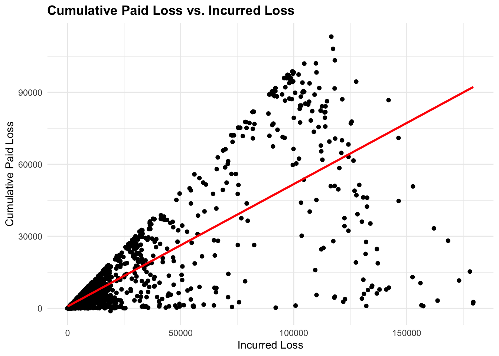
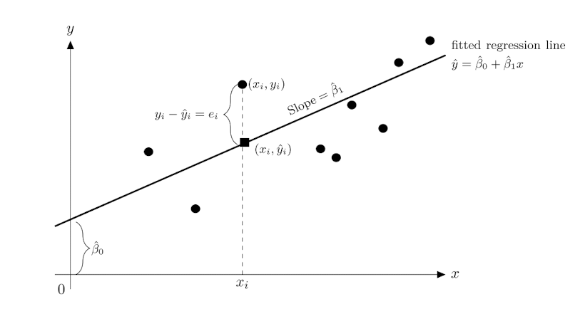
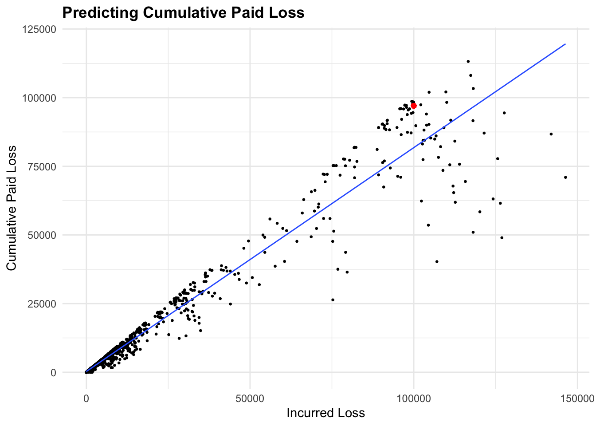
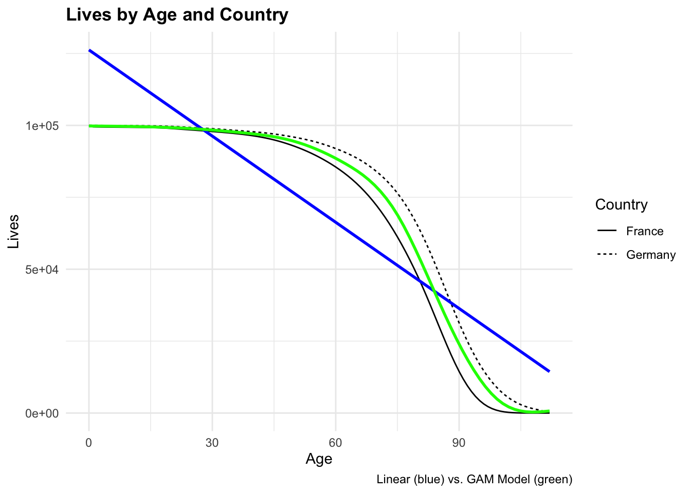

# Load necessary libraries
library(tidyverse)Introduction to R and Basic Data Analysis
ACTEX Learning - AFDP: R Session 2.2
Getting into Practice with Predictive Modeling
Predictive modeling is a specific, technical step within the broader process of predictive analytics. It involves creating a mathematical or machine learning model that can forecast future outcomes based on historical data. A predictive model is a representation of the relationships between variables (features) and the outcome you’re trying to predict (target). Various algorithms can be used to build these models, such as linear regression, decision trees, or neural networks.
In actuarial science, predictive modeling is used to estimate future claims, analyze risk, and set insurance premiums. In this session, we will explore some practical examples of predictive modeling in actuarial contexts using R.
Predictive Data Modeling Workflow

- Data Collection: Gather relevant data on the variables you want to analyze. This data can come from internal sources (company databases) or external sources (public datasets).
- Data Cleaning and Preparation: Clean the data by handling missing values, removing duplicates, and transforming variables. Prepare the data for analysis by creating features and a target variable.
- Exploratory Data Analysis (EDA): Explore the data to understand its structure, relationships, and patterns. Use visualizations and summary statistics to gain insights.
- Model Selection: Choose an appropriate predictive model based on the nature of the data and the problem you want to solve. Common models include linear regression, logistic regression, decision trees, and neural networks.
- Model Training: Split the data into training and testing sets. Train the model on the training data to learn the patterns in the data.
- Model Evaluation: Evaluate the model’s performance using metrics like accuracy, precision, recall, or the area under the ROC curve. Adjust the model parameters if needed.
Example 1: Predictive Modeling with Insurance Data
In this example, we will work with real-world insurance data to perform predictive modeling. The data is related to medical malpractice – claims made and contains information on incurred losses, cumulative paid losses, earned premiums, and development lags.
Data Collection
The data is available in a .CSV file from the Casualty Actuarial Society (CAS) website. We will load the data into R for analysis. The data set contains run-off triangles. Upper and lower triangles data correspond to claims of accident year 1988 – 1997 with 10 years development lag.
Tip
The codebook for the data can be found at the following link: Loss Reserving Data Pulled from NAIC Schedule P
url <- "https://www.casact.org/sites/default/files/2021-04/medmal_pos.csv"
df <- read_csv(file = url)
Tip
Downloaded data is now available in the Global Environment. It can be saved as a .CSV file for future use with the following code:
write.csv(df, "data/medmal_pos.csv")
medmal_pos <- read.csv("data/medmal_pos.csv")Data Cleaning and Preparation
dim(df);[1] 3400 13df %>% head() %>% glimpse()Rows: 6
Columns: 13
$ GRCODE <dbl> 669, 669, 669, 669, 669, 669
$ GRNAME <chr> "Scpie Indemnity Co", "Scpie Indemnity Co", "Scpie …
$ AccidentYear <dbl> 1988, 1988, 1988, 1988, 1988, 1988
$ DevelopmentYear <dbl> 1988, 1989, 1990, 1991, 1992, 1993
$ DevelopmentLag <dbl> 1, 2, 3, 4, 5, 6
$ IncurLoss_F2 <dbl> 121905, 112211, 103226, 99599, 96006, 90487
$ CumPaidLoss_F2 <dbl> 2716, 24576, 43990, 59722, 71019, 76354
$ BulkLoss_F2 <dbl> 97966, 64117, 39008, 20736, 13599, 10577
$ EarnedPremDIR_F2 <dbl> 129104, 129104, 129104, 129104, 129104, 129104
$ EarnedPremCeded_F2 <dbl> -6214, -6214, -6214, -6214, -6214, -6214
$ EarnedPremNet_F2 <dbl> 135318, 135318, 135318, 135318, 135318, 135318
$ Single <dbl> 0, 0, 0, 0, 0, 0
$ PostedReserve97_F2 <dbl> 344558, 344558, 344558, 344558, 344558, 344558df %>%
select(IncurLoss_F2, CumPaidLoss_F2, BulkLoss_F2, EarnedPremNet_F2) %>%
summary() IncurLoss_F2 CumPaidLoss_F2 BulkLoss_F2 EarnedPremNet_F2
Min. : -17 Min. : -1190 Min. :-32101.0 Min. : -728
1st Qu.: 0 1st Qu.: 0 1st Qu.: 0.0 1st Qu.: 0
Median : 645 Median : 187 Median : 0.0 Median : 1302
Mean : 11609 Mean : 6706 Mean : 1095.8 Mean : 12308
3rd Qu.: 9050 3rd Qu.: 4386 3rd Qu.: 107.2 3rd Qu.: 13490
Max. :179425 Max. :113189 Max. :104402.0 Max. :135318 We can use the summary() function to get a quick overview of the data, including the mean, median, minimum, and maximum values for each variable, or the count() function to count the number of observations in the data.
df %>%
select(DevelopmentLag) %>%
summary() DevelopmentLag
Min. : 1.0
1st Qu.: 3.0
Median : 5.5
Mean : 5.5
3rd Qu.: 8.0
Max. :10.0 Then we create a tailored dataset containing only the claims with a development lag of 5 years or more:
lag5plus <- df %>%
filter(DevelopmentLag >= 5) %>%
select(GRNAME, AccidentYear, IncurLoss_F2,
CumPaidLoss_F2, EarnedPremNet_F2, DevelopmentLag) %>%
rename(IncurLoss = IncurLoss_F2,
CumPaidLoss = CumPaidLoss_F2,
EarnedPremNet = EarnedPremNet_F2) %>%
# the model will treat each year as an independent category.
mutate(AccidentYear = as.factor(AccidentYear))lag5plus %>%
summary() GRNAME AccidentYear IncurLoss CumPaidLoss
Length:2040 1988 :204 Min. : -17 Min. : -23
Class :character 1989 :204 1st Qu.: 0 1st Qu.: 0
Mode :character 1990 :204 Median : 579 Median : 464
1991 :204 Mean : 10497 Mean : 8842
1992 :204 3rd Qu.: 8144 3rd Qu.: 6899
1993 :204 Max. :146354 Max. :113189
(Other):816
EarnedPremNet DevelopmentLag
Min. : -728 Min. : 5.0
1st Qu.: 0 1st Qu.: 6.0
Median : 1302 Median : 7.5
Mean : 12308 Mean : 7.5
3rd Qu.: 13490 3rd Qu.: 9.0
Max. :135318 Max. :10.0
top_5GR <- lag5plus %>%
group_by(GRNAME) %>%
summarize(mean_IncurLoss = mean(IncurLoss),
mean_CumPaidLoss = mean(CumPaidLoss),
mean_diff = mean_IncurLoss - mean_CumPaidLoss) %>%
arrange(desc(mean_CumPaidLoss)) %>%
slice_head(n = 5)
top_5GR# A tibble: 5 × 4
GRNAME mean_IncurLoss mean_CumPaidLoss mean_diff
<chr> <dbl> <dbl> <dbl>
1 Scpie Indemnity Co 90386. 85972. 4414.
2 Physicians Recip Insurers 103508. 74228. 29280.
3 State Volunteer Mut Ins Co 42873. 34267. 8606.
4 Promutual Grp 30437. 27381. 3055.
5 Markel Corp Grp 14647. 13915. 732.Exploratory Data Analysis (EDA)
We create a scatterplot for representing the relationship between IncurLoss and CumPaidLoss for both, the entire dataset and for claims with a development lag of 5 years or more:
# Plot 1
ggplot(df,
aes(x = IncurLoss_F2, y = CumPaidLoss_F2)) +
geom_point() +
geom_smooth(method = "lm", se = FALSE, color = "red") +
labs(title = "Cumulative Paid Loss vs. Incurred Loss",
x = "Incurred Loss", y = "Cumulative Paid Loss")
# Plot2
# Claims with a development lag of 5 years or more
ggplot(lag5plus, aes(x = IncurLoss, y = CumPaidLoss)) +
geom_point() +
geom_smooth(method = "lm", color = "red") +
labs(title = "Cumulative Paid Loss vs. Incurred Loss",
subtitle = "Development Lag >= 5",
x = "Incurred Loss", y = "Cumulative Paid Loss") 

We can see how the spread of the data points changes when we filter the data for claims with a development lag of 5 years or more. The linear relationship between IncurLoss and CumPaidLoss is more evident in the filtered data.
Model Selection
As the relationship between Cumulative Paid Loss and Incurred Loss is linear, we can use a linear regression model to predict Cumulative Paid Loss based on Incurred Loss, Earned Premium, Accident Year, and Development Lag.
Linear Regression Modeling
The linear regression model is a statistical method used to model the relationship between a dependent variable and one or more independent variables. The model assumes a linear relationship between the variables and can be represented as follows:

\[Y = \beta_0 + \beta_1 X + \epsilon\]
Where, \(Y\) is the dependent variable, \(X\) is the independent variable.
\(\beta_0\) is the intercept of the line, representing the baseline number of lives when age is zero, and can be calculated as follows:
\[\beta_0 = \bar{Y} - \beta_1 \bar{X}\]
\(\beta_1\) is the coefficient of the model, and can be calculated as follows:
\[\beta_1 = \frac{Cov(X,Y)}{Var(X)} = \frac{\sum_{i=1}^{n}(X_i - \bar{X})(Y_i - \bar{Y})}{\sum_{i=1}^{n}(X_i - \bar{X})^2}\]
Tip
In R we can calculate the coefficients of the model using the specific model function, such as lm(), or glm(). The slope (\(\beta_i\)) and intercept (\(\beta_0\)) can be retrieved from the model summary.
To calculate them directly, we can use the following code:
slope <- cov(x, y) / var(x)
intercept <- mean(y) - slope * mean(x)
y_hat <- intercept + slope * x
y_hat_dist <- abs(y - y_hat)The objective is to minimize the sum of squared errors (SSE) between the predicted values and the actual values.
\[SSE = \sum_{i=1}^{n}(Y_i - \hat{Y_i})^2\] Evaluating the model with the following metrics:
- R-squared: The proportion of the variance in the dependent variable that is predictable from the independent variable(s). \[R^2 = 1 - \frac{SSE}{SST}\]
- Mean Absolute Error (MAE): The average of the absolute differences between predicted and actual values. \[MAE = \frac{1}{n} \sum_{i=1}^{n}|Y_i - \hat{Y_i}|\]
- Mean Squared Error (MSE): The average of the squared differences between predicted and actual values. \[MSE = \frac{1}{n} \sum_{i=1}^{n}(Y_i - \hat{Y_i})^2\]
- Root Mean Squared Error (RMSE): The square root of the average of the squared differences between predicted and actual values. \[RMSE = \sqrt{MSE}\]
Model Training
We will create a training and a test dataset to train the model and evaluate its performance.
# Split the data into training and test sets
set.seed(123)
train_index <- sample(1:nrow(lag5plus),
0.8 * nrow(lag5plus),
replace = FALSE)
train_data <- lag5plus[train_index, ]
test_data <- lag5plus[-train_index, ]The train_data will be used to fit the model, while the test_data will be used to evaluate the model’s performance.
Fitting a regression line model with only one predictor
We use the lm() function to fit a linear regression model with the CumPaidLoss as the dependent variable and IncurLoss as the predictor variable. The formula for the model is CumPaidLoss ~ IncurLoss.
# Fit a linear regression model
model1 <- lm(formula = CumPaidLoss ~ IncurLoss,
data = train_data)
# View the model summary
summary(model1)
Call:
lm(formula = CumPaidLoss ~ IncurLoss, data = train_data)
Residuals:
Min 1Q Median 3Q Max
-54129 -312 -312 169 18408
Coefficients:
Estimate Std. Error t value Pr(>|t|)
(Intercept) 3.117e+02 1.298e+02 2.401 0.0165 *
IncurLoss 8.100e-01 4.911e-03 164.956 <2e-16 ***
---
Signif. codes: 0 '***' 0.001 '**' 0.01 '*' 0.05 '.' 0.1 ' ' 1
Residual standard error: 4811 on 1630 degrees of freedom
Multiple R-squared: 0.9435, Adjusted R-squared: 0.9434
F-statistic: 2.721e+04 on 1 and 1630 DF, p-value: < 2.2e-16The output of the linear regression model provides information about the coefficients of the model, their significance, and the overall fit of the model to the data.
In this case we used a simple regression model with one predictor (IncurLoss) to predict the CumPaidLoss. The coefficients of the model represent the relationship between the predictor variable and the outcome variable.
The results show, the coefficient for IncurLoss is 8.100e-01 and indicates that for each unit increase in IncurLoss, the CumPaidLoss is expected to increase by 8.100e-01 units.
Tip
# Define the number
num <- 8.100e-01
num[1] 0.81# Force the display of the number in scientific notation
format(num, scientific = TRUE)[1] "8.1e-01"# Force the display of the number without scientific notation
format(num, scientific = FALSE)[1] "0.81"The p-value associated with the coefficient is less than 0.05, indicating that the coefficient is statistically significant in predicting the outcome.
The R-squared value measures how well the model explains the variance in the data, with higher values indicating a better fit. In this case it explains ~94% of the variance in the data.
We have used only one predictor variable in this model, but you can include additional variables like EarnedPremNet, AccidentYear, and DevelopmentLag to build a more complex model.
Fitting a multiple regression model:
\[y = \beta_0 + \beta_1 x_1 + \beta_2 x_2 + ... + \beta_n x_n + \epsilon\]
# Fit a multiple linear regression model
model2 <- lm(CumPaidLoss ~ IncurLoss + EarnedPremNet + AccidentYear + DevelopmentLag,
data = train_data)
# View the model summary
summary(model2)
Call:
lm(formula = CumPaidLoss ~ IncurLoss + EarnedPremNet + AccidentYear +
DevelopmentLag, data = train_data)
Residuals:
Min 1Q Median 3Q Max
-39813 -1131 88 1182 20446
Coefficients:
Estimate Std. Error t value Pr(>|t|)
(Intercept) -5.925e+03 5.515e+02 -10.745 < 2e-16 ***
IncurLoss 4.652e-01 1.680e-02 27.694 < 2e-16 ***
EarnedPremNet 3.431e-01 1.621e-02 21.164 < 2e-16 ***
AccidentYear1989 2.945e+02 4.540e+02 0.649 0.51664
AccidentYear1990 3.961e+02 4.635e+02 0.855 0.39295
AccidentYear1991 1.461e+03 4.590e+02 3.182 0.00149 **
AccidentYear1992 1.411e+03 4.574e+02 3.085 0.00207 **
AccidentYear1993 2.124e+03 4.660e+02 4.559 5.54e-06 ***
AccidentYear1994 2.306e+03 4.601e+02 5.013 5.95e-07 ***
AccidentYear1995 2.235e+03 4.576e+02 4.885 1.14e-06 ***
AccidentYear1996 2.063e+03 4.550e+02 4.534 6.22e-06 ***
AccidentYear1997 2.878e+03 4.586e+02 6.275 4.47e-10 ***
DevelopmentLag 5.472e+02 6.001e+01 9.117 < 2e-16 ***
---
Signif. codes: 0 '***' 0.001 '**' 0.01 '*' 0.05 '.' 0.1 ' ' 1
Residual standard error: 4128 on 1619 degrees of freedom
Multiple R-squared: 0.9587, Adjusted R-squared: 0.9584
F-statistic: 3130 on 12 and 1619 DF, p-value: < 2.2e-16The results of the multiple linear regression model provide information about the coefficients of the model for each predictor variable, their significance, and the overall fit of the model to the data.
The coefficients for the predictor variables indicate how they influence the predicted CumPaidLoss. All coefficients are positives and statistically significant, this means that all predictor variables have a positive impact on the CumPaidLoss.
Models Evaluation
ANOVA Test
anova(model1, model2)Analysis of Variance Table
Model 1: CumPaidLoss ~ IncurLoss
Model 2: CumPaidLoss ~ IncurLoss + EarnedPremNet + AccidentYear + DevelopmentLag
Res.Df RSS Df Sum of Sq F Pr(>F)
1 1630 3.7728e+10
2 1619 2.7586e+10 11 1.0142e+10 54.113 < 2.2e-16 ***
---
Signif. codes: 0 '***' 0.001 '**' 0.01 '*' 0.05 '.' 0.1 ' ' 1The ANOVA test compares the two models to determine if the additional predictor variables in model 2 significantly improve the model fit compared to model 1.
In this test the null hypothesis is that the two models are equal, and the alternative hypothesis is that the two models are different.
A p-value less than 0.05 indicates that model 2 is a better fit for the data than model 1.
R-squared
# Calculate the R-squared
summary(model1)$r.squared;[1] 0.943482summary(model2)$r.squared[1] 0.9586755The R-squared value measures how well the model explains the variance in the data, with higher values indicating a better fit. In this case, model 2 has a higher R-squared value than model 1, indicating that it explains more of the variance in the data.
Mean Squared Error (MSE)
# Mean Squared Error (MSE)
mean(model1$residuals^2)[1] 23117737mean(model2$residuals^2)[1] 16903090Mean Squared Error (MSE) is a measure of the model’s accuracy, with lower values indicating a better fit to the data. The model with the lower MSE is considered more accurate in predicting the outcome.
Model 1 and model 2 released a MSE of 23117737 and 16903090, respectively, which means that model 2 is more accurate in predicting the CumPaidLoss. And in terms of units, the MSE is in squared currency units. And so, ($)16903090 is the average squared error in predicting the CumPaidLoss. So, we can commit an error of ($)16903090 in our predictions.
Root Mean Squared Error (RMSE)
sqrt(mean(model1$residuals^2));[1] 4808.091sqrt(mean(model2$residuals^2))[1] 4111.337The Root Mean Squared Error (RSME) is a measure of the model’s accuracy, and the closer it is to zero, the better the model fits the data, with lower values indicating a better fit to the data. The RMSE is in the same units as the dependent variable (CumPaidLoss).
An RMSE value of ($)4,111.337 represents the average deviation of the predicted values from the actual values in the same units as the dependent variable.
Predicting Cumulative Paid Loss
Based on the metric results from both models, we select model2 to estimate the CumPaidLoss values on different data than the training set used to fit the model.
Prediction generally refers to estimating an outcome based on known input variables. The goal is to predict outcomes for new observations within the range of the data used to train the model. In prediction, you’re often working with data that is either currently available or similar to what you’ve already observed. The prediction is based on patterns learned from historical data.
To test the predictions capability of model2, we use the predict() function on the test_data as follows:
# Predict the cumulative paid loss for the test data
predictions_test <- predict(model2, test_data)Then, we can visualize the actual vs. predicted values using a scatter plot:
# Plot actual vs. predicted values
ggplot(test_data,
aes(x = CumPaidLoss, y = predictions_test)) +
geom_point() +
geom_abline(slope = 1, intercept = 0, color = "red") +
labs(title = "Actual vs. Predicted Cumulative Paid Loss",
x = "Actual", y = "Predicted")
We can also use the model to estimate the CumPaidLoss for new data points. For example, we can create a new dataset with specific values for the predictor variables and use the models to predict the CumPaidLoss.
# Create a new dataset for predictions (optional)
new_data <- data.frame(
AccidentYear = factor(1995),
DevelopmentLag = 5,
IncurLoss = 100000,
EarnedPremNet = 150000
)
# Predict the cumulative paid loss for new data
predictions <- predict(model2, new_data)
predictions 1
97030.53 Visualize the predicted value on observed data:
ggplot(lag5plus,
aes(x = IncurLoss, y = CumPaidLoss)) +
geom_point(size = 0.5) +
geom_point(x = new_data$IncurLoss, y = predictions, color = "red") +
geom_smooth(method = "lm",
linewidth = 0.5,
se = FALSE) +
labs(title = "Predicting Cumulative Paid Loss",
x = "Incurred Loss", y = "Cumulative Paid Loss")
Example 2: Predicting Lives Based on Age and Country
The data for this example is from the lifecontingencies package, which contains various datasets related to actuarial science. You don’t need to install the package, as data is made available in the data folder of the lesson as .RData file.
We will use demographic data for France and Germany to build a linear regression model to predict future lives based on age and country.
Data Collection
load("data/demo_data.RData")Data Cleaning and Preparation
raw_Germany <- demoGermany
head(raw_Germany) x qxMale qxFemale
1 0 0.000113 5.9e-05
2 1 0.000113 5.9e-05
3 2 0.000113 5.9e-05
4 3 0.000113 5.9e-05
5 4 0.000113 5.9e-05
6 5 0.000113 5.9e-05livesGermany <- raw_Germany %>%
rename(age = x) %>%
select(age, qx = qxMale) %>%
mutate(px = 1 - qx,
lives = c(1, head(lead(px), -1)),
lives = as.integer(100e3*cumprod(lives))) %>%
select(age, lives)
head(livesGermany) age lives
1 0 100000
2 1 99988
3 2 99977
4 3 99966
5 4 99954
6 5 99943raw_France <- demoFrance
head(raw_France) age TH00_02 TF00_02 TD88_90 TV88_90
1 0 100000 100000 100000 100000
2 1 99511 99616 99129 99352
3 2 99473 99583 99057 99294
4 3 99446 99562 99010 99261
5 4 99424 99545 98977 99236
6 5 99406 99531 98948 99214livesFrance <- raw_France %>%
select(age, lives = TH00_02)
head(livesFrance) age lives
1 0 100000
2 1 99511
3 2 99473
4 3 99446
5 4 99424
6 5 99406Data Merging and Transformation
tbl_mortality <- livesFrance %>%
rename(France = lives) %>%
full_join(livesGermany %>%
rename(Germany = lives), by = "age") %>%
pivot_longer(cols = c("France","Germany"),
names_to = "Country",
values_to = "Lives") %>%
filter(!is.na(Lives))
head(tbl_mortality)# A tibble: 6 × 3
age Country Lives
<dbl> <chr> <dbl>
1 0 France 100000
2 0 Germany 100000
3 1 France 99511
4 1 Germany 99988
5 2 France 99473
6 2 Germany 99977We can also calculate the mean and standard deviation of the age and lives by country using the dplyr package:
tbl_mortality %>%
group_by(Country) %>%
summarize(mean_age = mean(age),
mean_lives = mean(Lives),
sd_age = sd(age),
sd_lives = sd(Lives))# A tibble: 2 × 5
Country mean_age mean_lives sd_age sd_lives
<chr> <dbl> <dbl> <dbl> <dbl>
1 France 56 67263. 32.8 38271.
2 Germany 55.5 73888. 32.5 34915.And the mean of the numeric variables in the dataset:
tbl_mortality %>%
select(where(is.numeric)) %>%
map_dbl(mean) age Lives
55.75111 70561.13778 Exploratory Data Analysis (EDA)
ggplot(tbl_mortality,
aes(x = age, y = Lives, color = Country)) +
geom_line() +
labs(title = "Lives by Age and Country",
x = "Age", y = "Lives")
Model Selection
Visualize the relationship between age and lives by country:
ggplot(tbl_mortality,
aes(x = age, y = Lives)) +
geom_line(aes(linetype = Country)) +
geom_smooth(method = "lm", se = FALSE, color = "blue") +
geom_smooth(method = "gam", se = FALSE, color = "green") +
labs(title = "Lives by Age and Country",
x = "Age", y = "Lives",
caption = "Linear (blue) vs. GAM Model (green)")
Generalized Additive Models (GAMs)
The model that would best fit the data is a Generalized Additive Model (GAM), it allows for non-linear relationships between the predictors and the response variable. The GAM model can capture more complex patterns in the data compared to a linear model.
To fit a GAM model, we can use the glm() function with the family = gaussian() argument to specify the Gaussian distribution for the response variable. The glm() function allows us to fit a variety of models, including linear regression, logistic regression, and generalized linear models (GLMs).
The formula for GAMs model is:
\[Y = \beta_0 + \beta_1 f(X_1) + \epsilon\]
Where, \(Y\) is the dependent variable, \(f(X_1)\) is a smooth function of the predictor variable, and \(\epsilon\) is the error term.
The residuals can follow different distributions depending on the type of model. In this case, we assume that the residuals follow a Gaussian distribution: \(\epsilon \sim N(0, \sigma^2)\)
\[\epsilon = Y - \hat{Y}\]
Let’s construct a GAM model to predict the number of lives based on age and country, using the poly() function to include a polynomial term for age:
\[Y = \beta_0 + \beta_1 X^2 + \beta_2 X + \epsilon\]
Model Training
# Split the data into training and test sets
set.seed(123)
train_index <- sample(1:nrow(tbl_mortality),
0.8 * nrow(tbl_mortality),
replace = FALSE)
train_data <- tbl_mortality[train_index, ]
test_data <- tbl_mortality[-train_index, ]gam_model <- glm(formula = Lives ~ poly(age, 2) + Country,
data = train_data)
summary(gam_model)
Call:
glm(formula = Lives ~ poly(age, 2) + Country, data = train_data)
Coefficients:
Estimate Std. Error t value Pr(>|t|)
(Intercept) 69372.9 717.8 96.652 < 2e-16 ***
poly(age, 2)1 -434010.8 6888.6 -63.004 < 2e-16 ***
poly(age, 2)2 -203229.3 6880.5 -29.537 < 2e-16 ***
CountryGermany 5455.4 1027.1 5.311 3.26e-07 ***
---
Signif. codes: 0 '***' 0.001 '**' 0.01 '*' 0.05 '.' 0.1 ' ' 1
(Dispersion parameter for gaussian family taken to be 47341820)
Null deviance: 2.4087e+11 on 179 degrees of freedom
Residual deviance: 8.3322e+09 on 176 degrees of freedom
AIC: 3697.9
Number of Fisher Scoring iterations: 2Looking at the meaning of the model output, the coefficients represent the expected count of lives. The coefficient for Germany (5455.4) indicates that the expected count of lives in Germany is higher than in France, after controlling for age.
poly(age, 2) coefficients results are negatives, which means that the expected count of lives decreases with age, but the rate of decrease slows down as age increases.
Models Evaluation
Akaike Information Criterion (AIC)
The Akaike Information Criterion (AIC) is a measure of the model’s goodness of fit, balancing the trade-off between model complexity and accuracy. Lower AIC values indicate a better fit to the data.
\[AIC = 2k - 2ln(L)\]
Where, \(k\) is the number of parameters in the model, and \(L\) is the likelihood of the model given the data.
\[L = \prod_{i=1}^{n} f(y_i | x_i)\] In this case \(f(y_i | x_i)\) is the probability density function of the Gaussian distribution.
AIC(gam_model)[1] 3697.896When comparing the AIC values of the linear model and the GAM model, the GAM model has a lower AIC value, indicating a better fit to the data.
Making Predictions
Here we test the predictions of the GLM and GAM models:
# Make predictions with the GLM model
gam_predictions_test <- predict(gam_model,
test_data,
type = "response")cbind(test_data, gam_predictions_test) %>%
ggplot(aes(x = age, y = Lives, group = Country)) +
geom_point(size = 0.5) +
geom_line(aes(y = gam_predictions_test, color = Country)) +
facet_wrap(~Country) +
labs(title = "Predicting Lives by Age and Country",
x = "Age", y = "Lives")
# Create a new data frame for predictions
new_data <- data.frame(age = 55, Country = "Germany")# Make predictions with the GLM model
gam_predictions <- predict(gam_model,
new_data,
type = "response")
gam_predictions 1
90916.2 # Plot the model
ggplot(tbl_mortality,
aes(x = age, y = Lives)) +
geom_line(aes(linetype = Country), size = 0.5) +
geom_smooth(method = "gam",
linewidth = 0.5,
se = FALSE) +
geom_point(x = 55, y = gam_predictions, color = "red") +
labs(title = "Predicting Lives by Age and Country",
x = "Age", y = "Lives Remaining")
Tip
To further understand how the model works, you can explore the predict() function with the ?predict() command in R.
?predict()Conclusion
In this session, we have explored practical examples of predictive modeling in actuarial contexts. We started by building a linear regression model to predict Cumulative Paid Loss based on Incurred Loss, Earned Premium, Accident Year, and Development Lag using real-world insurance data. We then moved on to predicting future lives based on age and country using demographic data for France and Germany with a Generalized Linear Model (GLM) and a Generalized Additive Model (GAM).
Predictive modeling is a powerful tool in actuarial science, allowing actuaries to forecast future outcomes based on historical data. By applying these techniques, actuaries can gain valuable insights into risk assessment, claim estimation, and premium setting, contributing to the stability and profitability of insurance companies.
Keep practicing and exploring different datasets to enhance your skills in predictive modeling and data analysis in the actuarial field. Happy modeling!